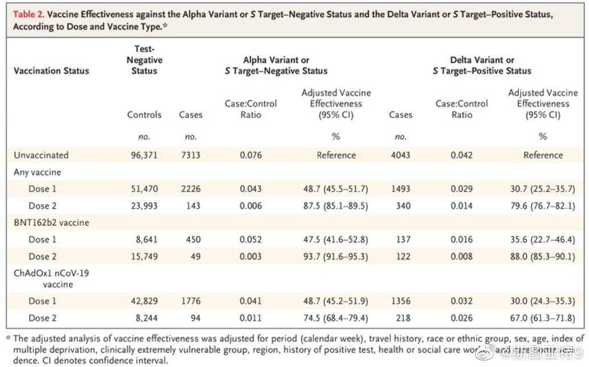

英国那个研究的结果就是这张图了：对于Delta疫苗，辉瑞有效率88%，牛津疫苗67%。他们的方法似乎是对有症状的人采样，计算有症状的人新冠阴性和阳性的比例，然后用个各种疫苗和未接种人群这个数字的比例做比较。但感觉依然没有考虑有没有接种的人接触病毒的机会高低的差别。 
以色列这两次公布数据的时候都没有公布计算的方法论和原始数据，也没有经过同行评审。我感觉极有可能就是按照感染比例简单做除法的。相比之下，两天前发表在《新英格兰医学杂志》上的英国数据经过了同行评审，用的是更可信的估算方法。以色列的数据也就是仅供参考吧，科学性打个问号。